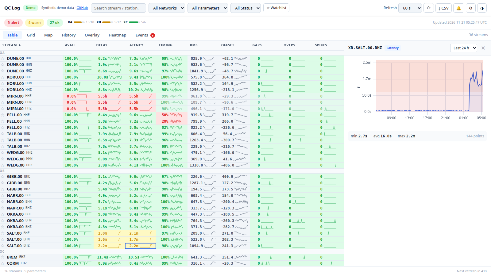
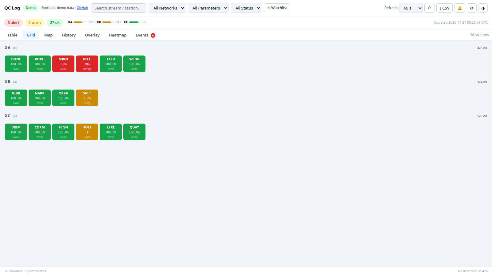
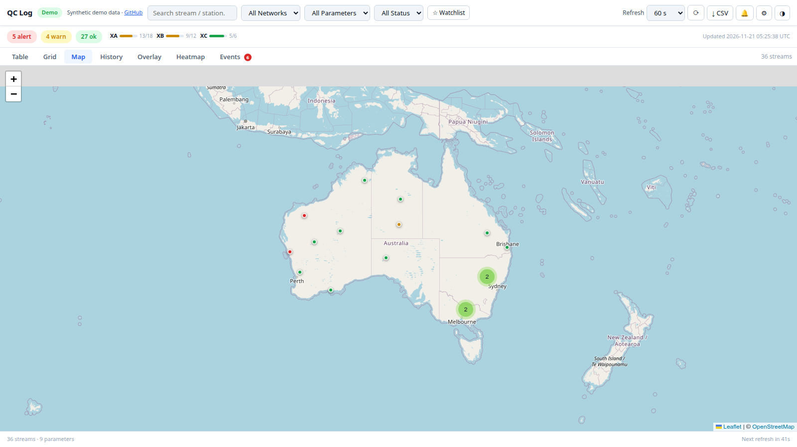
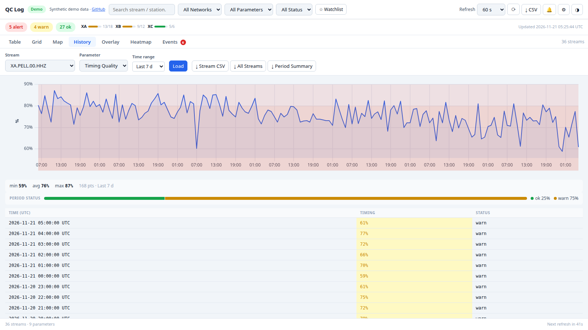
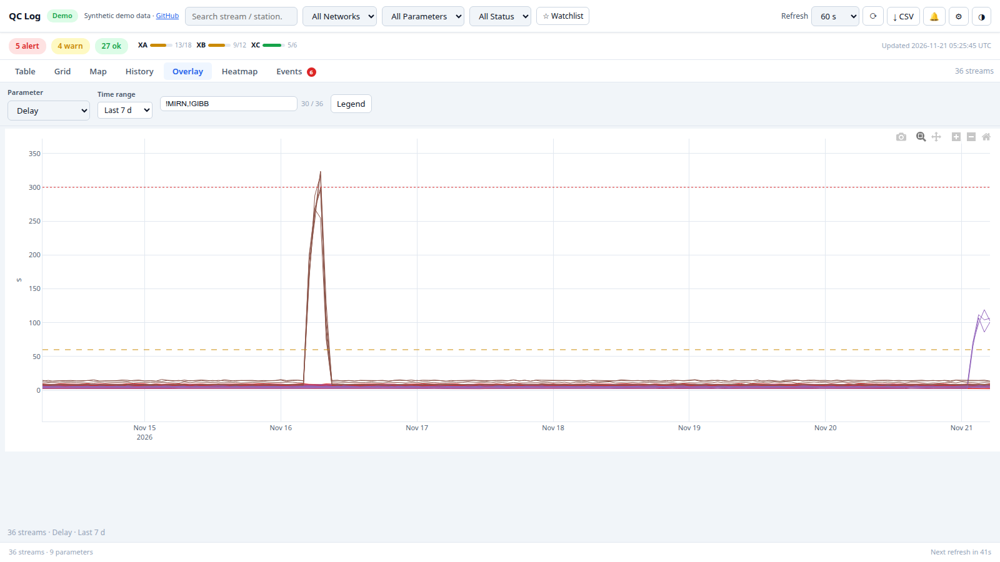
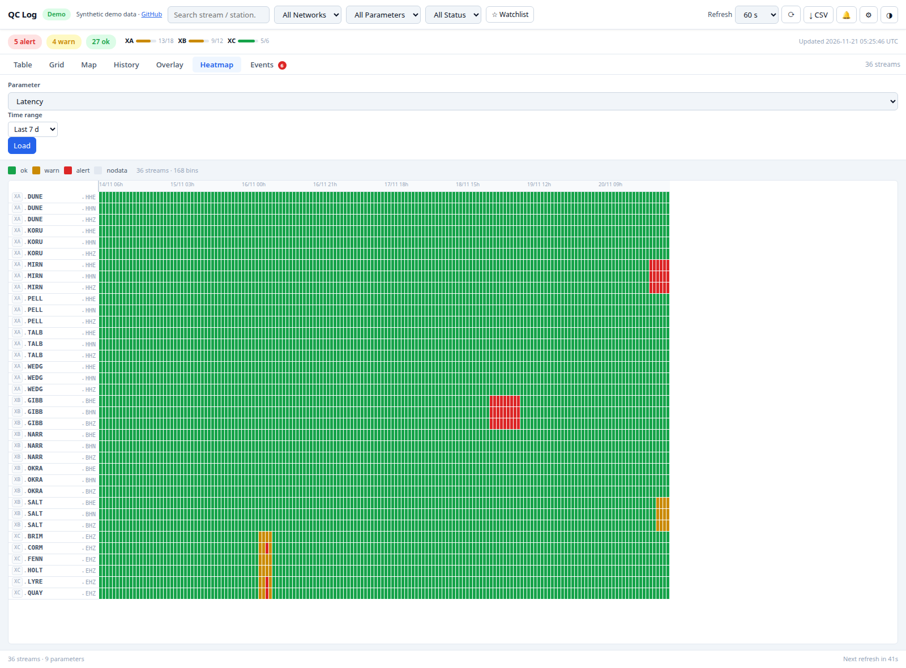
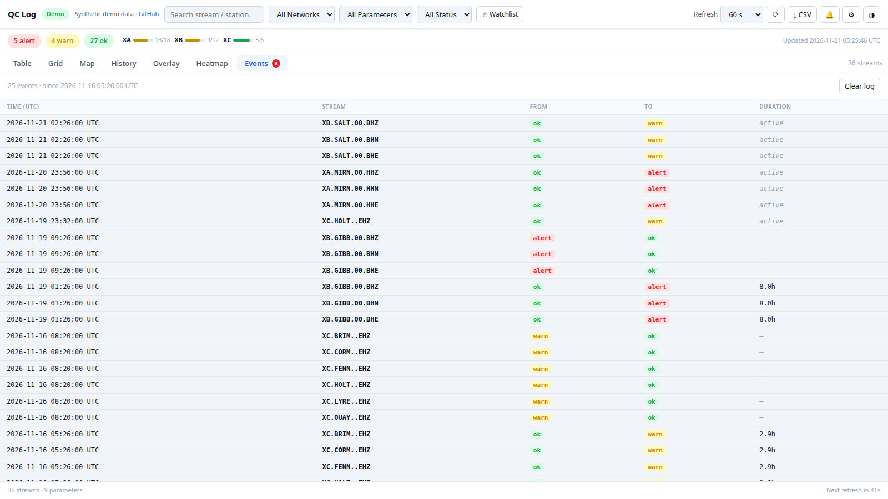

First presented at the SeisComP Regional User Group Meeting, Geoscience Australia, Canberra — 17 June 2026
Mustafa Comoglu
Motivation
scqc publishes QC metrics continuously to the messaging bus: delaylatencyavailabilitytiming qualityrmsoffsetgapsoverlapsspikes
Inspecting them normally means running a SeisComP GUI client (scqcv)
We wanted an always-on, browser-based view that anyone on the team can open
Focus: a quick network-health overview plus history — not a full analyst workstation
What is qclog2?
Python backend
A standard SeisComP application subscribed to the QC group; buffers inserts and writes periodic JSON snapshots
Static frontend
Plain HTML + JavaScript — no framework, no build step, served by any web server
SQLite storage
No extra database server. Raw values (72 h by default) + hourly rollup for 30 days
Minimal dependencies
Runs next to an existing SeisComP installation; chart and map libraries bundled locally
Architecture
scqc SeisComP
→
scmaster QC group
→
backend.py handleMessage()
→
SQLite qc_raw / qc_hourly
↓ every 60 s (configurable) / hourly
qc_current.json latest values + 24 h sparklines
qc_24h / qc_3d.json 10-min bins
qc_7d / qc_30d.json hourly averages
/api/qc custom time ranges
↓
Browser — polls the JSON files
Reading scqc parameters
Parameter
What scqc measures
delay
Time from the last sample of a record to when the record arrives
latency
Time between consecutive record arrivals
availability
Percentage of the report window covered by data
timing quality
From the miniSEED header (only if the datalogger writes it)
rms / offset
RMS amplitude and mean (DC offset) of the waveform, in counts
gaps / overlaps / spikes
Counts within the report window (plus interval statistics)
When a stream stops, scqc keeps reporting latency, delay (both keep growing) and availability (drops to 0)
via its timeout handling, while waveform-based parameters simply stop arriving. In qclog2 an outage therefore shows up
as red latency/availability with greyed-out (stale) waveform values.
scqc load scales with streams
scqc runs one instance of every plugin per stream — 10 plugins by default, each processing every record and keeping its own buffer
With report.interval = 60, each stream sends ~12 values per minute to the QC group — and every subscriber receives them
If archive.interval is enabled, the same values are also written to the SeisComP database (WaveformQuality table grows quickly)
Recommendation: monitor the vertical component only (the scqc default:
use3Components = false). Enabling three components — or all channels — roughly triples
scqc CPU/memory, the message rate through scmaster, and storage in both SeisComP and qclog2.
Example: 900 streams × ~12 values/min ≈ 15 million values per day.
Installation & Setup
Backend
# Development
seiscomp-python backend.py -H localhost
# Production: systemd unit included
sudo systemctl enable --now qclog2
# Quick start
python3 -m http.server 8080
# Production: nginx serves the files and
# proxies /api/ to the backend (port 8765)
✅ No npm / webpack / containers
✅ systemd service for the backend
✅ Station coordinates from FDSNWS
✅ backfill.py imports history from the SeisComP DB
Table View
One row per stream, one column per QC parameter
Cells coloured against configurable thresholds
Inline 24 h sparkline in every cell
Values older than 30 min are greyed out as stale
Sort by any column; search; filter by network or status
Click a cell → side-panel chart with its own time picker

Synthetic demo data · XA.MIRN is down (latency climbing, availability 0 %), XB.SALT has a slow link
Grid & Map Views

Grid — one card per station showing its worst status and the value that caused it.
Click a card to jump to the Table filtered to that station.

Map — Leaflet markers coloured by station status, clustered when zoomed out.
Popup shows the station code, status and number of streams. Coordinates come from FDSNWS.
History: Per-stream Charts
Presets 1 h → 30 d, or a custom UTC date range
10-min averages up to 3 days; hourly averages beyond
Warn / alert zones shaded behind the line
Period status bar: % of time OK / warn / alert / no data
CSV export: one stream, all streams, or a per-stream period summary

Timing quality of a station with a degrading GPS, last 7 days
Overlay: Multi-stream Comparison
All streams on one interactive Plotly chart, coloured by network
Filter: AU.ARMA, BHZ to include, !MIRN to exclude
Y-axis rescales to the visible streams
Legend: click to hide, double-click to isolate
All times in UTC

Delay, 7 days, two downed stations excluded: a regional telemetry incident on network XC stands out
Heatmap View
Rows: streams · Columns: time bins
Cell colour = status against thresholds
10-min bins up to 3 d, hourly for 7 d / 30 d
The fastest way to see when a problem started and how far it spread

Thresholds & Events
Per-parameter warn & alert levels, set in the UI and saved per browser (localStorage)
Watchlist to star and filter specific streams
Events tab: each change of a stream's overall status (ok / warn / alert / no data), with duration once resolved
Optional desktop notifications on alert and recovery
Events are detected by the browser while the dashboard is open — not a server-side alerting system

Data Retention
Tier
Resolution
Retention
Used for
qc_raw
Every value from scqc
72 h (configurable)
Latest values, 24 h & 3 d views
qc_hourly
Hourly avg / min / max
30 days
7 d & 30 d views, long custom ranges
JSON written every 60 s (current, 24 h, 3 d) and hourly (7 d, 30 d):
History can be backfilled from the SeisComP database, another qclog2 instance, or a CSV export.
A consistent daily backup of the SQLite file is made automatically.
Summary
Network views
Table, Grid, Map and Heatmap — each suited to a different monitoring task
History: 1 h → 30 d
Per-stream charts, period summaries and CSV export; Overlay for network-wide comparison